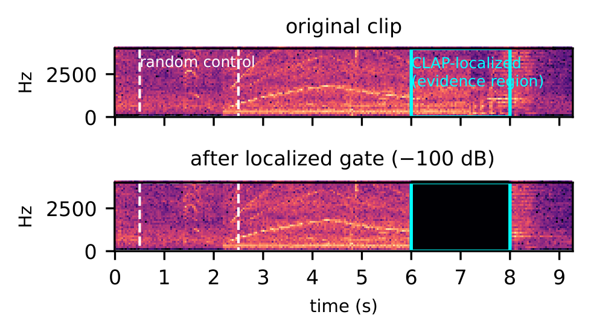
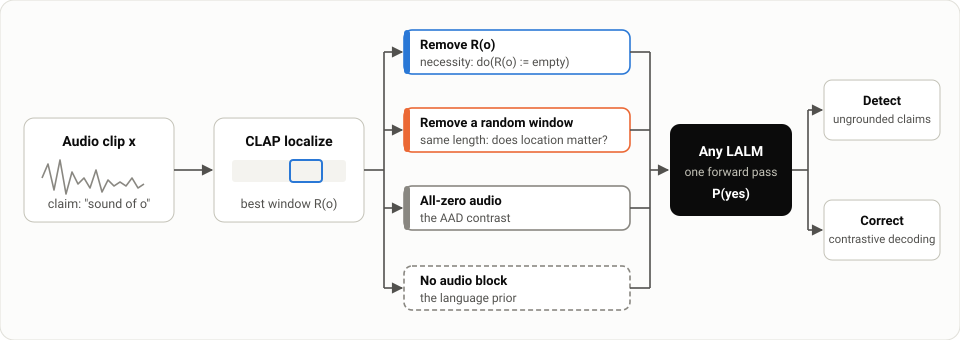
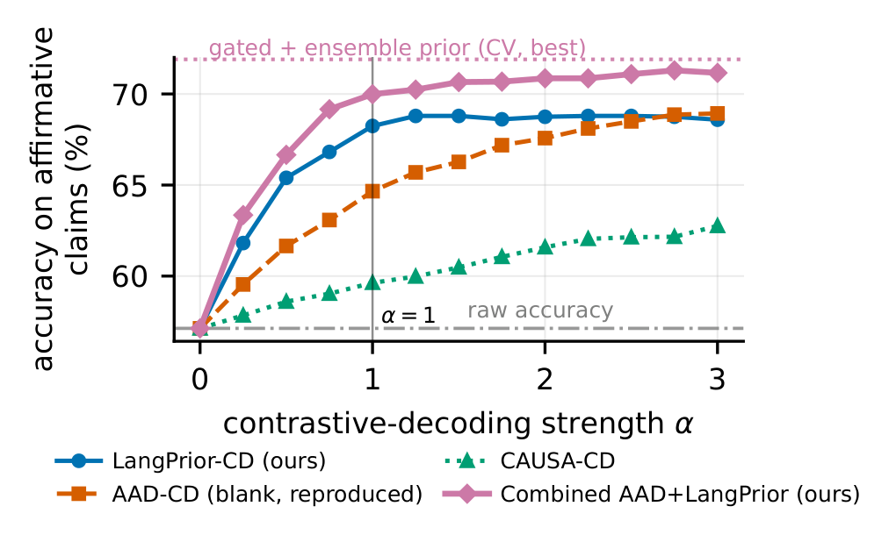

1Sharif University of Technology 2Amirkabir University of Technology
3New Uzbekistan University 4Okinawa Institute of Science and Technology

Large audio-language models often affirm sounds that are not in the recording. The usual inference-time fix, Audio-Aware Decoding, contrasts the real clip against an all-zero waveform, but silence is out-of-distribution for the audio encoder, so this confounds evidence absent with input malformed.
We remove only the region a claim should rely on, keep the rest of the recording intact, and compare against an equally long random region. The test needs only waveforms in and yes/no probabilities out: no gradients, no internal activations, no training.
This applies the same intervention as spectral_gate_remove to audio in your browser: the selected span is attenuated with 50 ms raised edges and everything else is left untouched. Drag on the spectrogram to choose the region, then listen to the result next to a random region of the same length. Nothing is uploaded.
The example is a synthetic 10 s signal (background noise plus a few tonal events), generated in the page. The model queries themselves need a GPU and run with examples/necessity_demo.py.
For a claim "yes, there is a sound of o", every condition is scored the same way: one deterministic forward pass, reading the next-token probabilities of "yes" and "no".

Slide a 2 s or 4 s window (0.5 s hop) over the clip and score each window against "a sound of o" with LAION-CLAP. The best window is R(o).
Attenuate R(o) by -40 or -100 dB with STFT masking and 50 ms raised-cosine edges, then ask again: a test of necessity, do(R(o) := ∅).
Repeat on a random window of the same size, on an all-zero clip (the AAD contrast), and with no audio block at all (the language prior).
Insert a real exemplar of o into a clip the model correctly rejects and check that it flips to "yes": a test of sufficiency.
Removing the top-ranked windows one after another gives the minimal necessary removal fraction. Its mean equals the area under the deletion curve, so the familiar deletion metric becomes the mean of a latent counterfactual.
The same contrasts correct the answer at decoding time. The combined rule subtracts both the blank and the language-prior logits, with the prior's weight scaled by its own confidence.
Hover or focus any bar for its value. Each chart also has a table view.
Blank's raw advantage is a duration effect. Blank silences the whole ~10 s clip; localized ablation removes 2-4 s. Fitting P(yes)-drop on the removed fraction using random windows only predicts blank's mean effect almost exactly, on both Qwen2-Audio (0.067 vs. 0.071) and AF3 (0.710 vs. 0.734).
At matched duration, location matters. Removing the CLAP window beats removing a random window of the same size in every grid cell, on both models. Pooled over cells, localized removal sits above the duration-only line (+0.014 on Qwen2-Audio, +0.096 on AF3) while random removal sits on it.
Localization error explains part of the gap, not all of it. With synthetic events at known positions, removing the true window beats CLAP's guess, which beats random. Even the true window flips only 16.8% of claims, so Qwen2-Audio is partly location-insensitive.
The same evidence corrects answers. A language-prior contrast alone gives +11.1 points over raw decoding at α = 1, beating AAD (+7.5). Combining both, gating by prior confidence and averaging five prompt paraphrases reaches 71.9%.
There is no single grounding profile. A detector trained on one model's causal signals loses to the other model's best fixed contrast. Qwen2.5-Omni follows Qwen2-Audio's pattern, not AF3's.

Every number above is produced by a script in the repository. Runners are resumable, and REPRODUCE.md maps each table and figure to its command and output file.
git clone https://github.com/khalooei/CAUSA.git && cd CAUSA pip install -e . # audit one claim python examples/necessity_demo.py --audio clip.wav --object laughter # full reproduction bash reproduce/00_data.sh bash reproduce/01_qwen2audio.sh # GPU, resumable bash reproduce/02_af3.sh bash reproduce/03_qwen25omni.sh bash reproduce/05_analysis.sh # all tables and statistics (CPU)
@misc{khalooei2026causa,
title = {Does Location Matter? {A} Black-Box Causal Audit Reveals
Model-Dependent Audio Grounding in {LALM} Hallucination},
author = {Khalooei, Mohammad and Sabokrou, Mohammad},
year = {2026},
note = {Under review},
url = {https://github.com/khalooei/CAUSA}
}